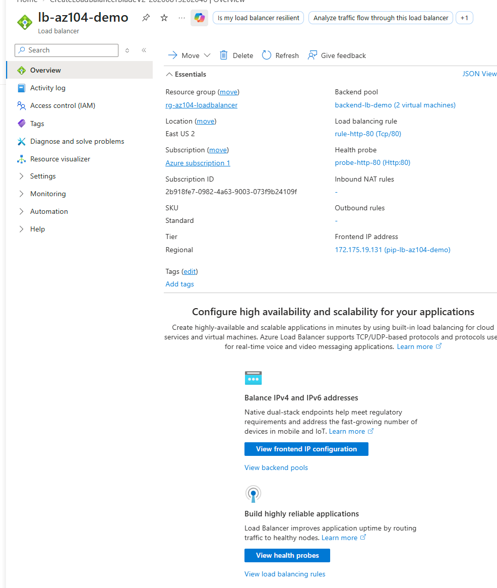
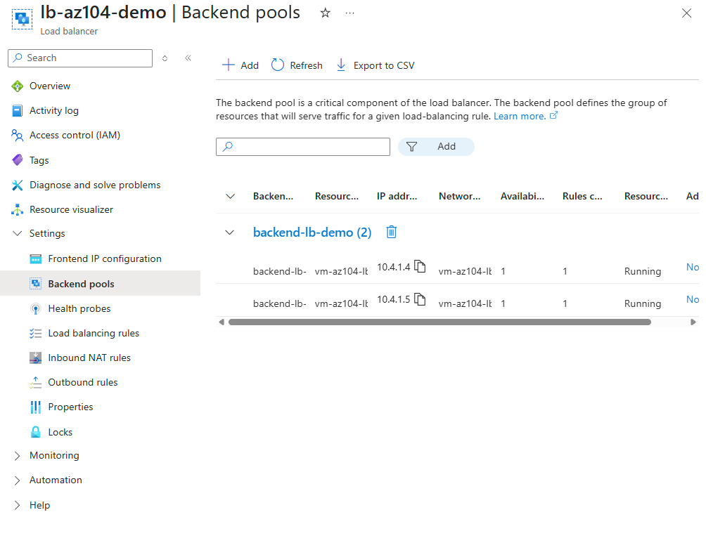
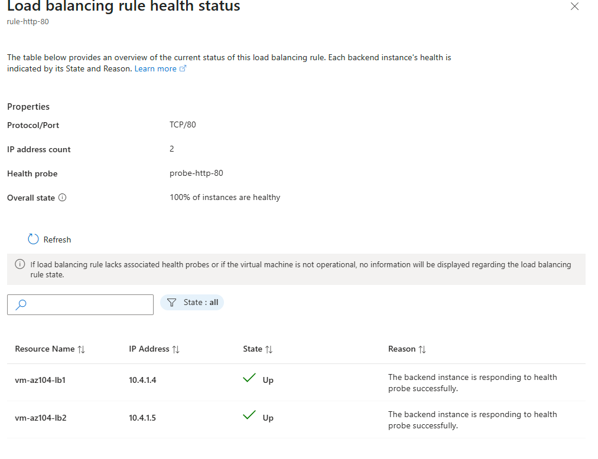
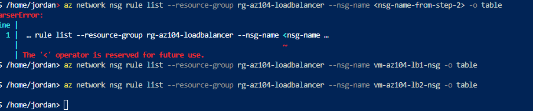
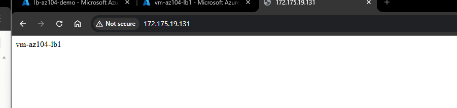

Deployed a Standard Load Balancer distributing HTTP traffic across two Windows VMs running IIS. The health probe reported both backend instances healthy from the moment the load balancer went live, but the public IP itself returned ERR_EMPTY_RESPONSE in the browser, an inconsistency that turned into the real lesson of this lab: the load balancer's own health probe traffic and real internet client traffic are not covered by the same default NSG rule, and a config that looks fully healthy on paper can still be unreachable to actual users.
Architecture Diagram
Standard SKU, not Basic
Basic Load Balancer is being retired on Microsoft's own roadmap and lacks availability-zone support and a few security defaults (Standard requires explicit NSG allow rules rather than allowing broad traffic by default, which is exactly what surfaced the bug in this lab). Standard is also what any real production deployment would use, so practicing against its stricter defaults is more representative of the exam and of real environments.
Two VMs in the backend pool, not one
A load balancer distributing across a single backend instance proves nothing about distribution; it only proves the rule and probe exist. Two VMs made it possible to actually confirm traffic gets spread across instances, and gave a real second data point when troubleshooting, since both VMs turned out to share the identical NSG misconfiguration, which itself was a useful confirmation that the fix needed to happen at the NSG layer per VM, not something unique to one instance.
An HTTP health probe on port 80, not TCP
A TCP probe only confirms a port is open and accepting connections; an HTTP probe confirms the web application behind it is actually returning a successful response. Given this lab's entire point was to distribute real web traffic, the probe needed to validate the same layer the real traffic depends on, not just the socket beneath it.
Fixing this at the NSG layer with an explicit Allow rule, not by loosening Windows Firewall further
Windows Firewall was already confirmed not to be the blocker. The instinct when something is unreachable is often to open the local firewall wider, but Azure's own network security layer sits in front of the OS firewall and enforces independently of it. Adding the explicit allow-http-80 rule at the NSG level fixed the actual point of failure and is also the architecturally correct place to manage this: NSGs are meant to be the deliberate, explicit gatekeeper for a VM's network exposure, and Standard SKU's stricter default of not implicitly allowing broad inbound traffic is a feature, not friction, once you understand why it exists.
Steps
Deployed two IIS-backed VMs behind a Standard Load Balancer, hit a real-world troubleshooting scenario where the health probe looked perfect while the public endpoint was completely unreachable, and traced it down to the NSG layer rather than the application layer.
- Created rg-az104-loadbalancer and deployed vm-az104-lb1 and vm-az104-lb2, both Windows, both with IIS installed via Run Command
- Confirmed IIS worked locally on each VM independently before introducing the load balancer at all
- Deployed lb-az104-demo, Standard SKU, with backend pool backend-lb-demo containing both VMs, health probe probe-http-80 (HTTP, port 80), and load balancing rule rule-http-80 (TCP, port 80)
- Confirmed via the portal's load balancing rule health status view that both backend instances showed Up, 100% of instances healthy
- Hit ERR_EMPTY_RESPONSE loading the load balancer's public IP directly in a browser, despite the fully healthy probe status, and ruled out Windows Firewall as the cause on both VMs
- Verified via Run Command directly on vm-az104-lb1 that W3SVC was Running, port 80 had an active listener, the site's HTTP binding was correctly set to
*:80, and a request tohttp://localhostreturned a clean HTTP 200, confirming the application layer was entirely healthy on the VM itself - Moved the investigation to the network layer and used Azure CLI in Cloud Shell to list the NSGs attached to each VM's NIC (vm-az104-lb1-nsg, vm-az104-lb2-nsg), then listed their inbound rules
- Found zero custom rules on either NSG, only the Azure default rules: AllowVnetInBound, AllowAzureLoadBalancerInBound, and DenyAllInBound, meaning the health probe (sourced from Azure's internal 168.63.129.16 address) was passing under the default LB-allow rule while every real internet-sourced request on port 80 was being silently dropped by the default deny rule
- Added an explicit allow-http-80 rule (priority 100, Allow, TCP, port 80, source Internet) to both vm-az104-lb1-nsg and vm-az104-lb2-nsg via Azure CLI
- Reloaded the load balancer's public IP in a browser and confirmed a successful response, correctly identifying itself as being served by vm-az104-lb1
Evidence






"The portal will let you build something that looks finished. Writing it in code is what makes you notice everything the portal quietly decided for you."
I am learning Infrastructure as Code deliberately, specifically Terraform and Bicep, rather than treating them as copy-paste snippets. Writing the NSG rules explicitly here is the clearest example yet of why: the portal's Standard Load Balancer wizard never surfaced the fact that per-VM NSGs would need their own explicit inbound Allow rule for real traffic, but that requirement is unmissable the moment you have to declare every rule in code rather than let a wizard's defaults quietly stand in for it.
Terraform .tf
Bicep .bicep
Same structure and same missing-piece lesson: the NSG allow rule for real inbound traffic has to be declared explicitly, it is not implied by anything else in the load balancer definition itself.
PowerShell
Azure CLI
- A healthy load balancer probe is not proof that real traffic can reach the backend. Azure's default AllowAzureLoadBalancerInBound NSG rule exists specifically to let the probe source (168.63.129.16) through, completely independent of whether any rule exists for actual internet-sourced client traffic. A 100% healthy probe status and a completely unreachable public endpoint are not a contradiction, they are two different traffic paths governed by two different rules, and this lab is the clearest possible proof of that distinction.
- Standard Load Balancer's stricter default posture (no implicit broad allow) is a deliberate security property, not an inconvenience. Basic SKU's looser defaults would have masked this exact lesson. Standard forced an explicit, auditable decision about what traffic is allowed in, which is exactly the behavior you want in a real environment, even though it meant hitting this wall during the lab instead of skipping past it.
- Ruling things out in the right order saves real time. Windows Firewall was checked and cleared first since it is the fastest and most familiar thing to check, then the application layer was confirmed fully healthy directly on the VM (service running, port listening, correct binding, working localhost response) before moving to the network layer. Confirming the VM itself was innocent first made the eventual NSG discovery unambiguous rather than one theory among several still in play.
- Windows Firewall and NSGs are two independent layers, and clearing one says nothing about the other. It is easy to treat "firewall checked" as covering network security generally. Azure's NSG sits in front of the OS entirely and enforces its own rule set regardless of what the guest OS firewall allows, and any future unreachable-service troubleshooting needs to check both layers explicitly rather than assuming clearing one clears both.